Several of my writing assignments for my Digit100 class.
March 16th - Reflection on WordPress v. GitHub Sites
For me, the initial hurdle to get over was the massive amount of information at my fingertips and not knowing where to start. There are so many commands and formatting things and elements and attributes (plus a whole ton of jargon!) that is quite intimidating for a beginner using HTML and coding for the first time. It's easy to forget to put certain parts of the code; for example, forgetting any one of the elements of "a href="link"" (you can see in this version of the reflection that I can't include the arrow brackets or it can break the code) would make the function break or not execute correctly, and if you're not using an active code editor and previewer, you may not catch it.
WordPress is also a lot of information at once, with menus full of unfamiliar icons you're supposed to recognize but aren't actually as intuitive as WP may think they are. Seriously--the Settings icon being some weird slider instead of the gear that is used in many designs across the web is confusing. Oxygen also has many menus to browse, but it felt a lot less overwhelming than WP, or at the very least overwhelming in a different way.
WordPress, when being written on, is a lot cleaner. You don't have to look under the hood and type elements for organization and formatting, you can do it easily and seamlessly with the tools provided and one or two clicks. But that also means it's more restrictive than Oxygen and Git, because you rely on the tools you're given rather than being able to do whatever you'd like. For Oxygen, while you have to write the formatting and code yourself (which means research and trial and error), it also allows for more freedom.
Oxygen is a lot of reading and trial and error, but once you understand how to format, you can play with it further and break it intentionally. WordPress is a lot more confusing when it breaks, because you don't know how to fix the images not lining up with each other despite all signs pointing toward the fact that they should be able to.
WordPress works fine for anyone who's used Word or Docs before, and you can figure out what familiar buttons do and roughly grasp the idea. With Git and Oxygen, there's a need for patience and willingness to learn a new skill, which for some may be a barrier for entry. Good memory or even note taking is helpful, and is good to reference and utilize when using Oxygen and Git both.
I don't foresee myself using WordPress again after this class, mostly because I have little reason to make myself a website currently. Git I may get more use out of, simply due to the more creative aspects that I can apply to make my social media and other things prettier and more enticing to browse and look at.
Check out the same writing on my WordPress page as well, and feel free to browse around!
April 13th - Corpus Analysis Project
Background and Introduction
The two texts I decided to compare were wowaka's 2011 album Unhappy Refrain and Hitorie's 2019 album HOWLS.
wowaka is a solo producer who used a software called Vocaloid, a voice synthesizing program in which vocalists have given recordings to YAMAHA in order to analyze and create an instrument. Released in 2004, the original two iterations of the project were Leon and Lola, called "Virtual Soul Vocalists". That same year, YAMAHA, in collaboration with Crypton Future Media, created the first Japanese Vocaloid named Meiko, closely followed by a masculine voice named Kaito.
For the second iteration, aptly named Vocaloid 2, the now flagship character Hatsune Miku, voice provided by Saki Fujita was created and released in 2007, which was a massive hit with consumers and is still used (albeit in more updated forms) today. Why is this relevent?
Well, in 2009, wowaka produced and released his first song titled "In The Gray Wone" using the Vocaloid software after quitting his band. He continued to create music, known as Genjitsutouhi-P, and quickly grew popular on a Japanese video sharing website called Nico Nico Douga. In 2010, after self-publishing his own album, he helped create a record label named Balloom along with several friends, who were also Vocaloid producers.
Under the Balloom label, he published his debut studio album Unhappy Refrain, which was met with critical acclaim within the community and even became popular overseas in the United States. He has gone down as one of the most influential Vocaloid producers of all time.
Also in 2011, he joined with some friends and founded the band Hitorie. The album of theirs' that I am analyzing alongside Unhappy Refrain, HOWLS, was released February 2019, the last album of theirs' released before wowaka suddenly passed in his sleep from heart failure.
Onto the analysis!
In this analysis, paragraphs relating to wowaka's Unhappy Refrain will be coloured in cyan. Paragraphs relating to Hitorie's HOWLSwill be coloured in orange.
To begin;
Unhappy Refrain has 3,995 total words and 985 unique words (about 24.65% of the words are unique). HOWLS has 3,525 total words and 825 unique words (about 23.4% of words are unique), leaving Unhappy Refrainas the bigger text by 470 words and 160 unique words.
This is the word cloud for Unhappy Refrain. You can see the most common words used within the album are; just (36); want (26); it's (26); i'm (23); time (18).This is the 50 word cloud with stopwords automatically filtered out. I found it interesting that of all words, just was the most common. Some instances of it's use in the text are "Doesn't it hurt just to look at?" (from the lyrics of the song "Unhappy Refrain"), "I just wanted to say I love you" (from "Reversible Doll), and "please, just leave me alone" (from "Toosenbo"). The second most common word is want, tied with it's.
This second image is the is the 50 word cloud with stopwords on, which I find equally interesting. The word occurrences are as follows; i (169); the (166); to (119); and (87); a (73). I showing up so often was interesting to me.
This is the word cloud for HOWLS. The most commonly occurring words are; i’m (30); it’s (27); words (19); sing (18); night (18). Once again, this is the 50 word cloud, with stopwords automatically filtered out. Some instances of I'm are "I'm not the one you're looking at though, huh?" (from "Sleepwalk"), "I'm sick and tired of hearing about methodologies or right and valid theories" (from "Coyote and Ghost"), and "Unknowing yet I'm still smiling unfazed" (from "Windmill").
This, just like above, is the 50 word cloud with the stopwords on. The most common occurrences for this one are; i (146); the (110); to (101); a (92); of (63). Once again, I was the most common result, though lower than the Unhappy Refrain album. Though, given the differences in the sizes, I'm curious if it'd roughly the same amount.
Next, the AntConc analysis.
These are the 2, 3, and 5 ngram result for the Unhappy Refrain album respectively. The most common for the 2 ngram were "it s" with 32 hits, followed by "i m" at 29 and "want to" at 24. The 3 ngram had "i want to" at 11 and a three way tie for second between "i don t", "one more time", and "that s what" with 7 occurrences. The 5 ngram has "how does it feel to" at first with 6, and another three way tie between "does it feel to be", "feel to be up high", and "it feel to be up" with 5 occurrences (which are from the same sentence that occurs 5 times). In total, Unhappy Refrain has 4165 tokens to analyze.
These are the 2, 3, and 5 ngram result for the HOWLS album respectively. The most common for the 2 ngram were "i m" with 35 hits, followed by "it s" at 31 and "i can" at 25. The 3 ngram had "i can t" at 18, "if it s" at 9, and a four way tie between "a road of", "down a road", "i want to", and "road of no", all with * occurrences (three of which coming from the same sentences). The 5 ngram has "down a road of no" at first with 8, a two way tie for second with "down a road of no" and "give it one more try" at 7, and an eight way tie for third. In total, HOWLS has 3733 tokens to analyze.
It was surprising to me how similar the albums were. Unhappy Refrain has 7 songs on the album for a total runtime of 29:45. HOWLS has 9 total tracks and a runtime of 37:08. With statistics like this, it's surprising that Unhappy Refrain has both more tokens and more words / unique words--however, I believe there's an identifiable reason for this, and it requires a bit of context.
For one, Hitorie's songs tend to stretch words a bit more and linger on sentences. At least on the HOWLS album, many of the songs are slower.Unhappy Refrain, conversely, is known for being incredibly fast having a high BPM and cramming many lyrics in each line. The titular song itself is 205 BPM, with 493 words in 3:46.The song with the most words on HOWLS is "Coyote and Ghost" at 658 words in 4:36.
The second reason I believe this is is because both albums are originally in Japanese, and there can be changes when translated to English. The entire HOWLS album has been translated by the wonderful Manjuhitorie on Tumblr, which includes context for why they translated each song in the way that they did. The benefit of this over machine translation is that human translators can understand intent and nuance, as well as artistic choices that were made. They often translate accordingly, and then must restructure the translated lyrics into similar meanings using different words to keep rhyming and the message / story. Conversely, the lyrics for the Unhappy Refrain album were taken from two different places; most of the lyrics are from the VocaloidLyrics Wiki as well as the Vocaloid Fandom Wiki for World's End Dancehall (a song on the album). The biggest issue with this is it's collaborative, so there may be some official lyrics, but for the most part the lyrics are submitted and translated by many different individuals (one of them being releska, who requests credit on his blog!).
April 6th - VARIA Lab 3: #D Modeling and Spacial Annotation Project
ThingLink Model for April Assignment
May 5th - Game Analysis Review
Game Analysis - Fossil Quest by Unsigned Double
First, the game itself.
The game I chose to play for the assignment is called Fossil Quest. It has a very simple premise; you are a paleontologist who recieves a letter from your aunt who has recently passed away. In this letter, she explains that she's leaving her manor in a quaint village named Follyoaks to you to fulfill your dream of creating a natural history museum.
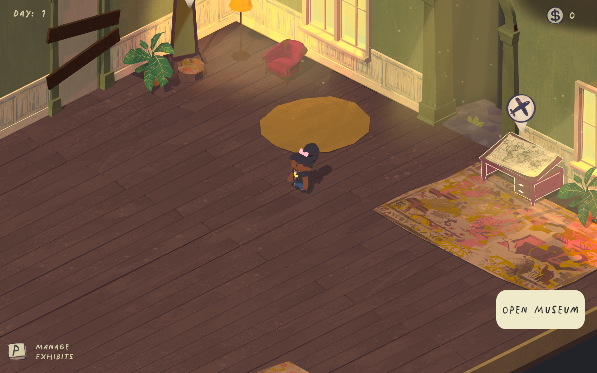
The manor, as seen when beginning the game. The player character can be found in the center of the screen, and the expedition table on the right.
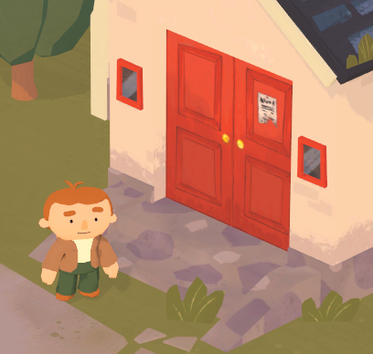
The mayor, Bryle, and his house behind him.
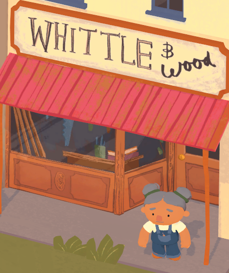
The carpenter, Mable, and her shop Whittle and Wood behind her.
The game begins with you starting at the edge of the village and walking in, meeting the two main NPCs--Bryle and Mable. Bryle is the mayor of the town, whereas Mable is the owner of the carpentry shop Whittle and Wood. When you talk to her, Mable tells you about her husband who has passed away recently, and how he used to do carpentry work with her, but now she does all of the work hersel. Bryle is the mayor, who inherited the role from his father who passed within the last few years. He explains that he doesn't quite know what he's doing but he's doing his best. Afterward, the only other place on the small map that you can visit is the Manor, your new home and the location of your new museum! It begins very empty, with an Expedition Station. This is where the game's main mechanic comes to play. The first location you can dig at is Montana. In this site, you can get dinosaurs like the Ankylosaurus and the Triceratops, as well as smaller fossils that can be found along the way. There are Large, Medium, and Small Fossils, as well as Lucky Finds.
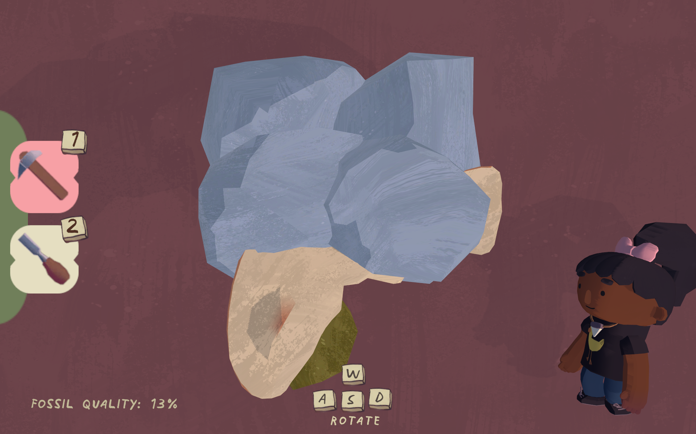
The Excavation minigame for Large Fossils
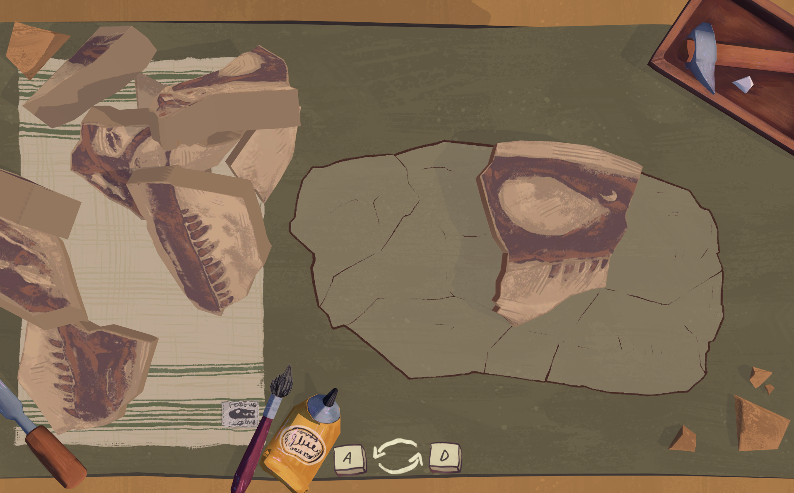
The Excavation minigame for Medium and Small Fossils.
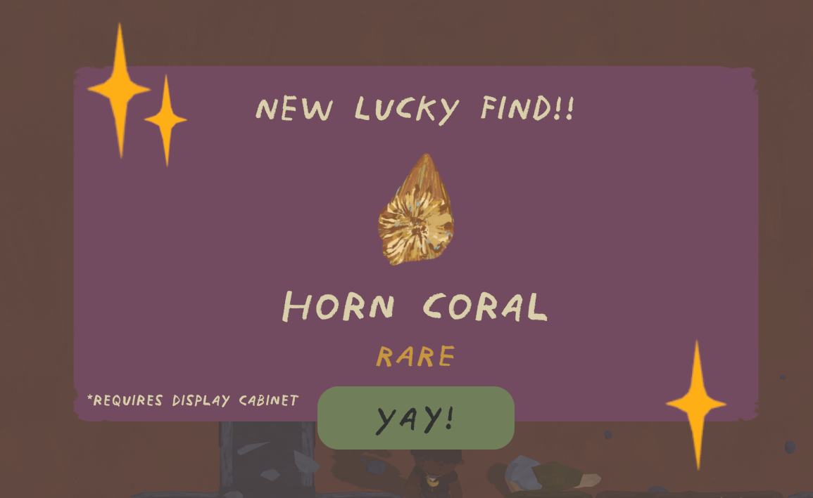
Lucky Find screen.
These are the three mechanics to find things for your museum! The first, most common one to find, is Large Fossils. There are three dinosaurs who give Large Fossils in the game, which are the Ankylosaurus, the Triceratops, and the Diplodocus. These three dinosaurs are broken up into several pieces (around 20 on average) and you must get one of each piece to display the full dinosaur. The Medium and Small Fossils are less common, including fossils like the Deinonychus Skull (Medium) or Ammonite (Small). These have the same minigame, where you're given pieces of the fossil and must reconstruct it like a puzzle. Lucky Finds are a unique mechanic--they're the smallest collectable and require a Display Case to display. There's a random chance when hitting a rock while excavating that a Lucky Find specimen will drop.
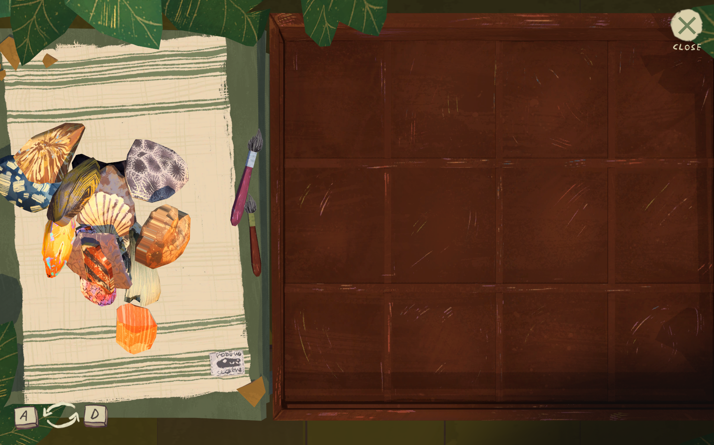
The Display Case, with a pile of Lucky Finds on the left. Must be bought separately at Mable's.
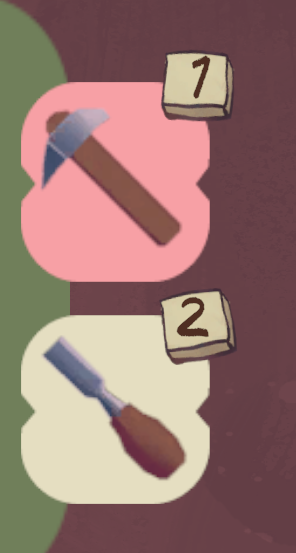
The Pickaxe and Chisel, used to excavate the Large Fossils. Can be upgraded at Mable's to reduce the damage done to fossils if hit accidentally.
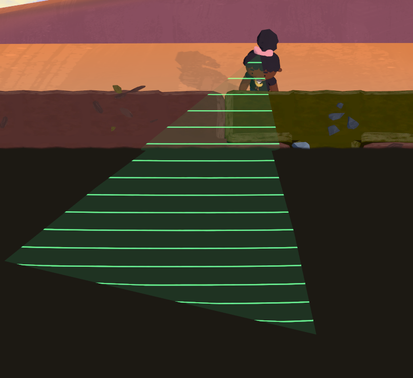
The Scanner, a tool that allows the player to see if there are any Small, Medium, or Large Fossils in the rocks around them. Cannot see Lucky Finds.
There are four total digsites in the game so far, including the two you get at the beginning of the game-- Montana, US, the first one I mentioned, and Sasketchewan, Canada. If you go to Mable and upgrade your plane, you can unlock two new areas: The Karoo in South Africa and Colorado (which is also in the US). These sites vary in siwe depending on how far you are in the game, with The Karoo having the most different layout of the four. At the beginning, you'll only be able to get seven fossils from Montana and Sasketchewan, but as you progress and buy upgrades from Mable, you'll be able to get up to 17 fossils per excavation depending on the layout you get, which is randomized every time. There is a day mechanic, but as of now, event seem to be progression based and not time based, so they don't have much weight.
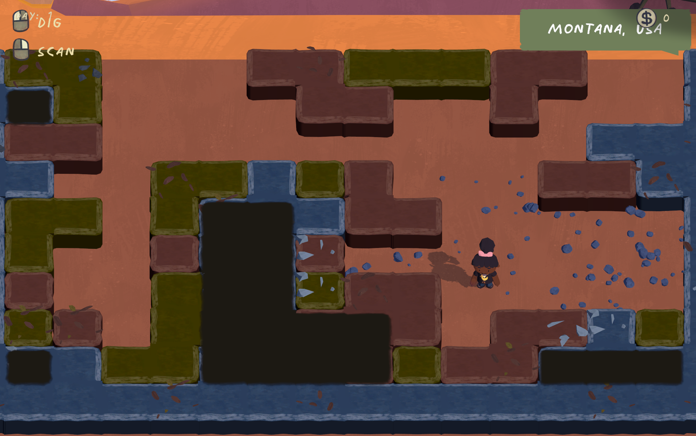
Montana, US. The first digsite in the game.
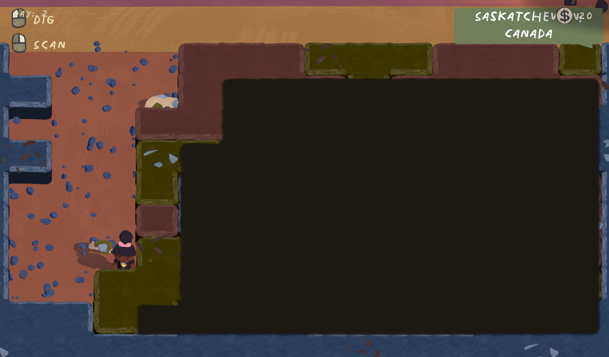
Sasketchewan, Canada, the second site in the game.
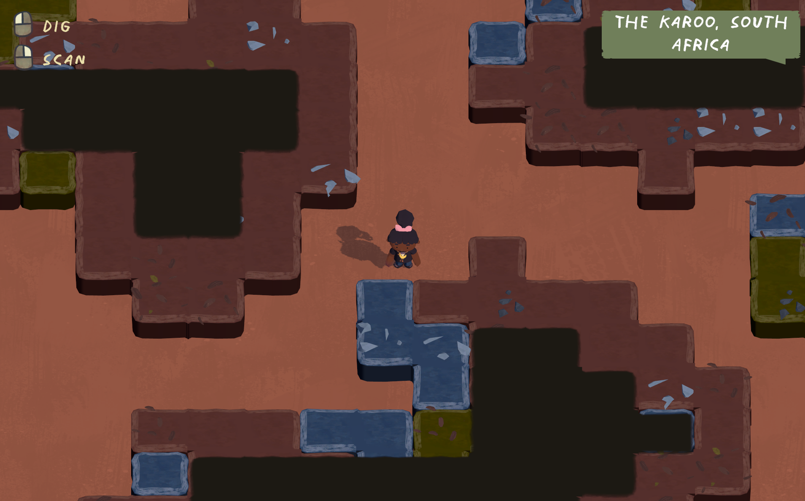
The Karoo, South Africa, the third site in the game.
Now, onto the analysis...
The music is pretty nice. Not too loud or distracting--it fits well for a game you can get lost in the gameplay loop of excavate > place > open museum > repeat. The sound effects are a bit loud and abrasive, specifically the sound of the pickaxe hitting the rocks to break them, which can be a bit annoying while playing. The graphics are very stylized and fairly simple in the excavation sites, but the fossils and museum are rendered well, and it's an enjoyable style over all. It's quite charming, and has a unique visual identity for sure.
You can't explore very far, but what you can explore is quite fun. You can get quite a few specimens despite only havong four sites to dig at an explore. The town was only added to the game recently, and the only three locations of interest are Bryle. Mable, and you rmanor, of which the third is the only one you can't see from the outisde, but also the only one you can enter. At the beginning of the game, you can customize your player character as well. While there aren't many options, it is nice to see a customization aspect! Inside the manor there's a mirror where you can change your appearance at any time as well. This is also a relatively new aspect, as per the dev logs, and will likely be expanded upon.
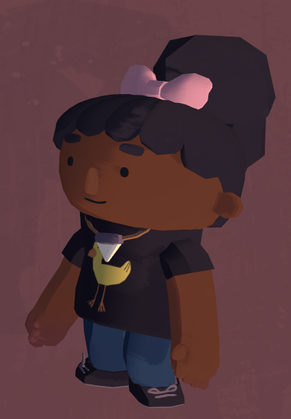
My player character!
Final thoughts on the game...
Overall, I enjoyed the time I spent on the game. While there's not much variety on what you're doing, but thta's not always bad! After several hours, it began to get a bit tedious, though, so I'd be interested to see if the developers will add new mechanics to diversify the gameplay and make it more interesting in the long run. Collecting everything is very fun, but I wish there was a way to track what you've collected adn what you still have to collect and where. In the preview before you chose the dig site, you can see the large fossils and a few of the medium sized fossils you can find, but it doesn't give you a list of lucky finds. You basically have to check with Mable to see if there are more display slots you have to buy or if you have them all and they're all set up. As of writing this review, I'm missing the Diplodocus skeleton and haven't collected all of it yet, but I believe I have most of everything else. So for now, I will let the gam sit until a new update comes along! The good news is due to the support, the developers have been able to put their game on Steam and are working toward making it a full, paid game, so I'm excited to see what changes from now to the full release.